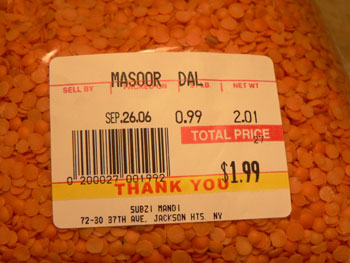

Dal
After cooking lentils for the first time last week, I’ve had these little legumes on the brain. I wasn’t too impressed with the French variety (this is not necessarily the lentils’ fault; it was my first time), and they were nothing like the fabulous Indian dal I’d eaten dozens of times with a Punjabi friend’s family in England. Those are the lentils I dream about: spicy, creamy, hearty, and healthy. I haven’t had anything similar since, but Sabena finally let me in on what she calls a state secret: her recipe for lentils. She’s extremely particular about lentils, and she’s been known to stop talking to people who fail to execute something so simple, even though it’s clearly very complex.
When I told Sabena that the price of lentils had shot up because of an Indian ban on exports, and that Jackson Heights, Queens was on the verge of chaos, we decided we had better lay our hands on some Masoor dal and fast. Happily, we were both invited to Kim’s Hamstravaganza right in Jackson Heights, where we met, among other people, the whole Epifurious gang. The party was fun and the spread was legendary: a giant ham, honey cake, cornbread custard, grits, fabulous biscuits, quail eggs benedict, and more. Sabena kept warning me surreptitiously to “save room for kebabs,” but even she couldn’t find the appetite after all that good eating. We did, however, locate the cherished orange lentils, higher than their usual price but stocked in abundance.

And on Sunday night, I made my first attempt at Indian lentils, cilantro and all. I have a long way to go. They were good, and I simmered them for an hour as instructed, but I don’t think perfect dal is instantaneous. I’d tell you the recipe, but I might not live to try it again. It involves, like most dal I imagine, ginger, garlic, turmeric, cumin, coriander, kari patha leaves, baking soda, salt, olive oil, onions, and plenty of fresh cilantro.
Comments
I’m sorry you’re unable to reveal your secrets because I’d love to have creamy lentils. I usually find them more of a somewhat grainy-gritty-coarse texture that while not unpleasant is also not particularly appealing.
Add a comment